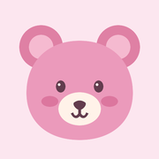

Ms Rachel Remote
On your iPad, open the player’s Remote section and choose Send controls to phone. Open that setup link here to connect this remote.
Controls every active iPad using this remote. Keep the player open and both devices online.